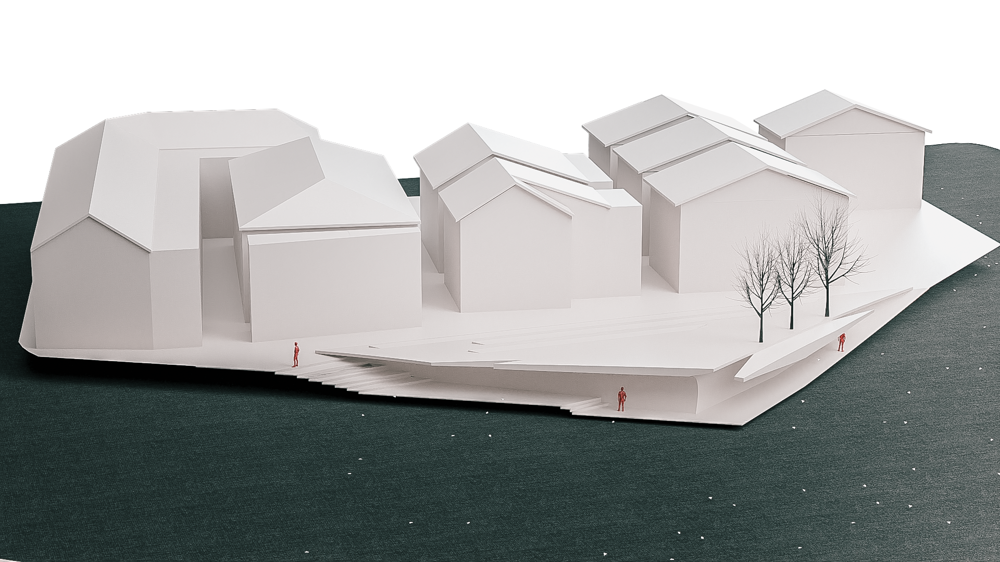
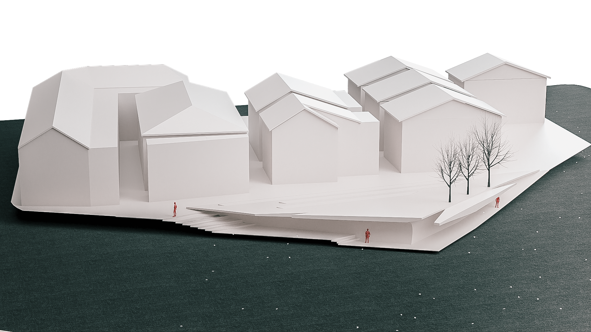

Future, present, and past in landscape
My landscape design is focusing on human, it's about human's past, present, and future. I tries different materials and diferent space design, all this are going to create a better feeling for people.
My landscape design is focusing on human, it's about human's past, present, and future. I tries different materials and diferent space design, all this are going to create a better feeling for people.
